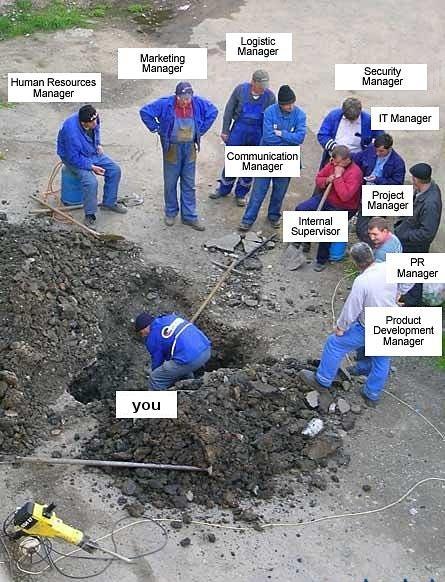
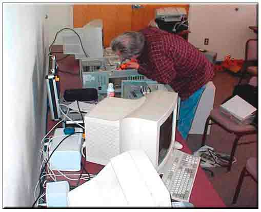
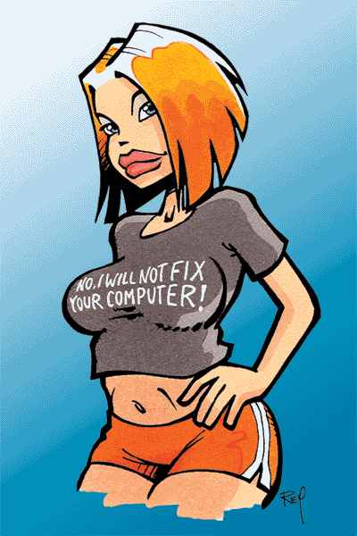

Ok, questa non e’ una vera e propria lamentazione come quelle a cui siete abiutati su questo blog :P
E’ tratta da un mio post su http://www.vitadiunsysadmin.net, che secondo me sta bene anche qui. Buona lettura:
Ok, fare il lavoro che faccio mi piace, perche’ amo i sistemi UNIX, la loro semplicita’ nell’uso, la loro linearita’… e’ abbastanza facile non rimanere mai senza lavoro, anche in posti come Catania, dove non e’ che ci sia poi tutta questa concentrazione di aziende grosse.
Ti trovi spesso a combattere con interessanti problemi, a creare reti di host sempre piu’ strutturate ed integrate, ti senti un po’ come Dio (attenzione: per Dio non intendo il Dio dei cristiani, o quello dei Mussulmani, o quello di chi che sia, ma un fottuto Dio qualsiasi), aver creato la tua rete, gestirla, e’ un po’ come essere il Dio che ha creato il mondo, e lo sta a guardare dall’alto, in effetti e’ come giocare a Civilization. :)
Sei tu il padrone, sei tu a sapere tutto quello che succede nel tuo mondo, ed hai delle precise responsabilita’ in esso, devi mantenere “la pace”, controllare che nessuno sgami o faccia il furbetto, educare “il tuo popolo”, che poi e’ la popolazione dei dipendenti aziendali che vivono (perche’ ormai a lavoro si vive, non si va’…) all’interno del tuo mondo.
Contrariamente a quanto molti di voi non tecnici del settore pensano, come in altre professioni, anche in quella del sysadmin esiste un ben preciso codice etico-deontologico: proprio perche’ spesso un amministratore ha il pieno controllo della rete, deve garantire la privacy delle utenze e delle informazioni che amministra, senza mai abusare del proprio “potere”, deve dispensare rigidezza quando necessario, killando inesorabilmente le connessioni di quell’utente di turno che vuole fare il furbetto con eMule, e chiudere un occhio in certe altre situazioni.
La cosa piu’ bella se vogliamo e’ che questo codice non sta scritto da nessuna parte, ma vige chiaro nelle menti delle persone che fanno questo lavoro (almeno nelle persone che sono chiamate a fare questo lavoro, che sanno come farlo, che lo fanno al meglio, e che non hanno intenzioni maligne). Credo che la nostra, in effetti sia una vera e propria sub-cultura moderna, che ha molte intersezioni con quella degli coder hacker, o di hacker di altre discipline. Una sub-cultura che vive nell’underground sociale, sconosciuta ai piu’, a volte anche derisa, specialmente dai boss, che o non capiscono o, possibilmente, ci invidiano. Tutto questo e’ molto affascinante.
Per questo l’amministratore di sistema e’ un “animale d’azienda” un po’ controverso, come scrissi nel post intitolato “L’amministrazione di sistema e la sindrome della personalita’”.
Devi unire una buona dose di passione con una buona dose di “fanatismo” (in senso positivo) riguardante tecnologie aperte, free software, e free culture in genere.
Ti trovi sempre a dover risolvere una buona dose di problemi interessantissimi, ma anche frustranti e noiosissimi.
Per questo non puoi andare avanti senza una buona dose di senso dell’umorismo. A volte, specie se sei un soggetto ad alta pignoleria e/o ordinato nelle tue cose, hai bisogno di portare avanti la disciplina del “me ne fotto”, per salvaguardare la tua sanita’ mentale.
La passione, il senso dell’umorismo, la metodologie di cui sopra, aiuta ad evitare la frustrazione derivante dal sapere di essere un tecnico “altamente specializzato”, con un alto know-how ed una grande conoscenza di cultura informatica, ma inevitabilmente sottopagato, specie in relazioni ad altre figure aziendali.
A volte questo senso dell’umorismo sfocia in cose tipo questa:

Molti di noi hanno anche una rete a casa, e molti di noi finiscono spesso per fare lo stesso lavoro che fanno all’interno delle aziende, in casa propria, gestendo la propria rete, avendo a che fare con una popolazione diversa di utenti, che e’ la famiglia o le persone che abitano la casa che ospita la tua rete personale. E’ come lavorare continuamente! :)
Purtroppo c’e’ un fardello che pesa sopra le testa di chi come noi, deve fare questo sporco lavoro: avere a che fare con problemi stupidi, con gente spesso stupida, e con situazioni spesso assurde! Avete gia’ avuto modo di vedere alcuni esempi sempre in questo blog (non sto qui ad elencarveli, li potete trovare spulciando le categorie Lamentazioni o Lavoro).
Spesso ti ritrovi i fine settimana, bramoso di farti un pugno di cazzi tuoi, di dedicarti alla tua ragazza, ma spesso ti finisce cosi’:

Ti finisce a sistemare computer degli altri, che ti vengono inesorabilmente portati a casa, magari amici di famiglia che chiedono ai tuoi genitori se tu puoi sistemargli il computer, ed i tuoi genitori dicono “SI” senza chiedertelo.
Oppure sono familiari stessi, oppure gente sconosciuta.
Il piu’ delle volte scleri con quella merda di windows, il piu’ delle volte fai prima a:
- liberare spazio sui tuoi server di casa
- fare i backup dei dati del tuo “cliente”, il piu’ delle volte pornazzi, musica, foto, programmi pirata, stronzate di poco conto
- formattare il computer
- procurarti un cd di Windows e di tutti gli n-mila applicativi, che tu non hai perche’ non usi Windows da anni ormai felice
- reinstallare il sistema operativo
- reinstallare i programmi
- ripristinare il backup sul pc del tuo “cliente”
- fare tracchiggi vari, tipo installare firefox e thunderbird, disinstallando IE e Outlook (Express), mettendo a firefox e thunderbird le icoen di ie e outlook
- ed infine sperare che questa macchina non capiti piu’ tre le tue mani fra 4/5 mesi
La cosa piu’ bella e’ che la gente pensa siano stronzate da 5 minuti, si arrabbia se ci stai tanto, ed anche si offende se tu dici che non puoi. Cosi’ a te vengono gli esaurimenti nervosi:
A volte ti verrebbe voglia di distruggerlo quel computer…
Alcuni di noi usano diventare davvero stronzi, qualcuno dice “no grazie, ormai non uso Windows dal 98 e non saprei come sistemartelo”, altri lanciano messaggi chiari direttamente tramite il vestiario, che comunque molti non capiscono, anche se anglofoni:

Volete un esempio pratico?
Oggi mentre salgo a lavoro mi ferma un tipo che lavora in un ufficio sotto a quello dove lavoro io. Mi ferma…
Tizio: “Ti ha detto il tuo capo qualcosa?”
Io: “No, cosa mi doveva dire?”
Tizio: “Ho il portatile che mi da problemi, non si connette wifi, oggi pomeriggio te lo salgo gli puoi dare un occhio?”
Mah! ecco l’esempio, ti prendono come tuttofare, non solo devi risolvere i problemi personali dei computer personali dei tuoi capi, per giunta devi anche sistemare quelli DEI VICINI! MAH!